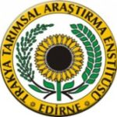
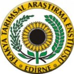

Bitki ıslahında biyoteknolojik çözümler

HAKKIMIZDA
TarLab Biyoteknoloji 2019 yılında TÜBİTAK – 1512 Teknogirişim Sermayesi Desteği ile kurulmuştur ve bitki biyoteknolojisi alanında AR-GE yoğun çalışmalar yürütmektedir.
Çalışmalarımız, modern biyoteknolojik yöntemlerin (bitki doku kültürü ve doubled-haploid teknikleri, markör destekli seleksiyon) bitki ıslah süreçlerine entegrasyonu ile geleneksel yöntemlere kıyasla daha kısa sürede, düşük maliyetle, %100 homozigot ebeveyn hatların üretimi üzerinedir.
Geleneksel yöntemlerle bitki ıslahı geri çaprazlamalar, mevsimsel engeller ve üzerinde çalışılması gereken materyal fazlalığı gibi sebeplerden dolayı 10-20 yıl gibi uzun süreler alabilmekte ve durulmuş bitkilerde %100 homozigoti elde edilemediği için genetik açılmalar ile verim kaybı yaşanabilmektedir. Bu olumsuzluklar modern biyoteknolojik yöntemlerin kullanımı ile kolaylıkla aşılmaktadır.
HİZMETLERİMİZ
_____Firmamız, bitki biyoteknolojisi alanında tecrübeli kadrosu ve modern biyoteknolojik yöntemleri kullanabileceği laboratuvar altyapısı ile tohum firmalarına ıslah çalışmalarında AR-GE ve danışmanlık hizmeti sunmaktadır.
Teknik Destek
Doubled-Haploid eldesi Markör destekli seleksiyon (MAS) Mikroçoğaltım Hızlı jenerasyon atlatma Flow-sitometri analizi
Proje Yönetimi
Yeni çeşit geliştirme Moleküler markör geliştirme Mikroçoğaltım optimizasyonu
Danışmanlık Hizmetleri
Islah çalışmalarına modern biyoteknolojik yöntemlerin entegrasyonu
REFERANSLARIMIZ
 
